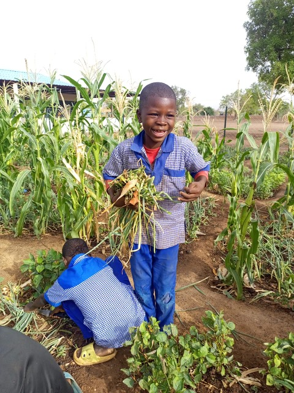
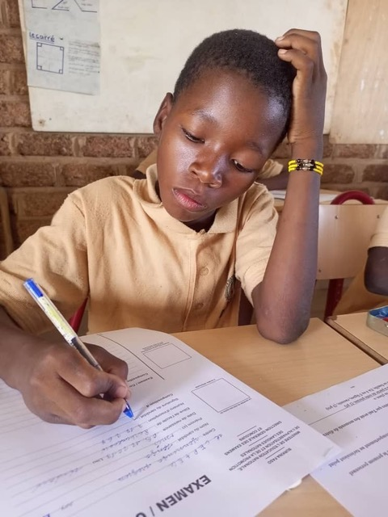
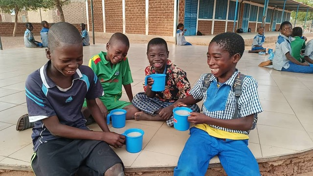

335 barn och varje dag räknas
Yennenga Progress driver förskola, grundskola och högstadieskola i Nakamtenga. Under 2025 fick sammanlagt 335 elever undervisning i dessa skolor. Det är barn som annars skulle ha haft begränsad eller ingen tillgång till utbildning av den kvalitet som Yennenga Progress erbjuder.
Varje skoldag fick eleverna ett näringsrikt mål mat och en frukt, serverat från kantinen som till stor del försörjs av farmens egen produktion. Totalt under året handlar det om 57 600 skolmåltider. Det är inte bara ett sätt att hålla hungern borta. Det är en förutsättning för att barnen ska orka lära sig, och för att familjerna ska välja att skicka sina barn till skolan varje dag.
Skolträdgården och kaninerna – lärande med händerna
Under 2025 utvidgades skolträdgården vid grundskolan. Barnen fick vara med och odla, skörda och förstå hur maten de äter kommer till, genom att systematiskt arbeta med ekologiska metoder av regenerativ odling som främjar biologisk mångfald. Det är praktisk kunskap som stannar kvar och som kopplar ihop klassrummet med den verklighet barnen lever i.
På förskolan fortsatte kaninuppfödningsprojektet som startade föregående år. Även de allra yngsta barnen får möta lärande kopplat till ansvar, omsorg och försörjning. Det är tidigt sådda frön för ett liv där man tar hand om sin omgivning.

Lärarna som växer – certifikat och kvalitet
En skola är bara så bra som de som undervisar i den. Under 2025 tog flera av Yennenga Progress pedagoger viktiga steg i sin yrkesutveckling genom fortbildning och mer omfattande pedagogiska certifikat. Det stärker kvaliteten i undervisningen inte bara nu, utan långsiktigt. En utbildad och motiverad lärarkår är den investering som ger mest tillbaka.
Eftersom barnens psykiska hälsa är en grundstomme i att bli hela människor, som inte för sina trauman vidare, lägger vi stor vikt vid strukturerat arbete för psykisk hälsa, med kontinuerliga mötesplatser för samtal om värderingar, relationer och konflikthantering. Vi har också socionomstöd för att stödja både personal, elever och familjer då detta behövs. Ett erkännande av att barns välmående och trygghet är lika viktigt som deras kunskaper för att skapa en hållbar framtid.

Ett historiskt beslut: friskola med statliga bidrag
Det kanske viktigaste beslutet under 2025 kom inte från Yennenga Progress själva, utan från de burkinabéiska myndigheterna: högstadieskolan godkändes som friskola med rätt till statliga elevbidrag.
Det innebär att behovet av utländsk finansiering till högstadieskolan inom kort kan halveras. Det är ett konkret steg mot det mål Yennenga Progress arbetat mot i decennier, dvs ett samhälle som bär sin egen välfärd. Skolan är inte längre enbart beroende av bidrag från Sverige. Den är på väg att bli en del av det nationella systemet.
När skolan inte längre behöver pengarna från utlandet för att överleva, är det inte ett tecken på att vi lyckats göra oss onödiga – det är tecknet på att vi lyckats få erkännande att arbeta vidare med vidareutveckling av skolan som nav för samhällsutveckling, med stöd från lokala myndigheter.

Barnrättsklubb, kulturdagar och utflykter
Utbildning är mer än ämneskunskaper. Under 2025 genomförde Yennenga Progress fredsutbildning inom barnrättsklubben, kulturella skoldagar och utflykter som skapade gemenskap och minnesvärda upplevelser. Det är dessa stunder som gör skolan till ett ställe alla vill komma tillbaka till och som ger barn en känsla av att de hör hemma i en större berättelse.